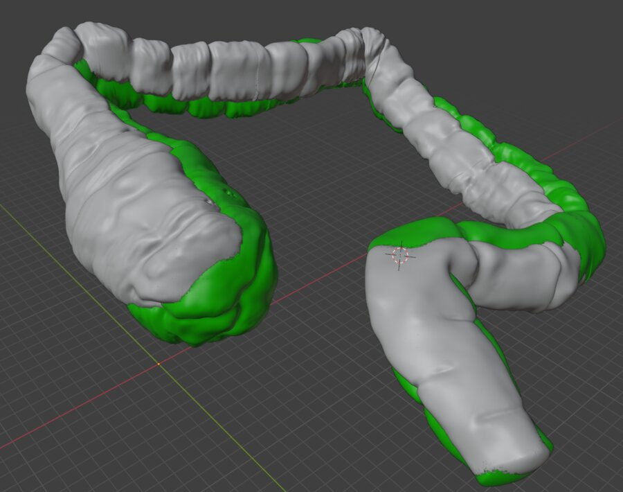
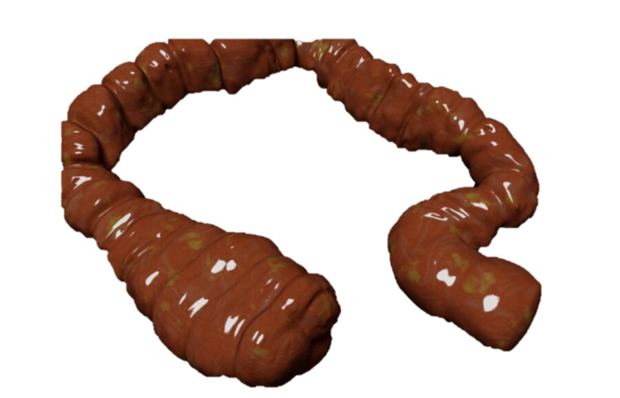
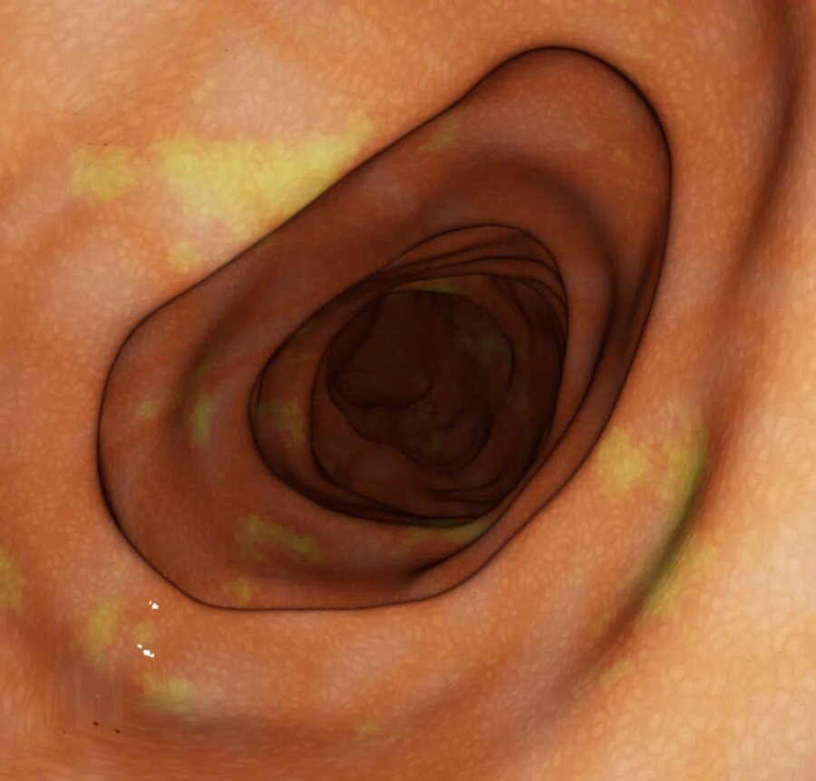
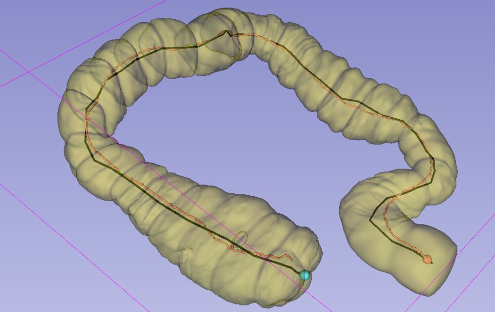
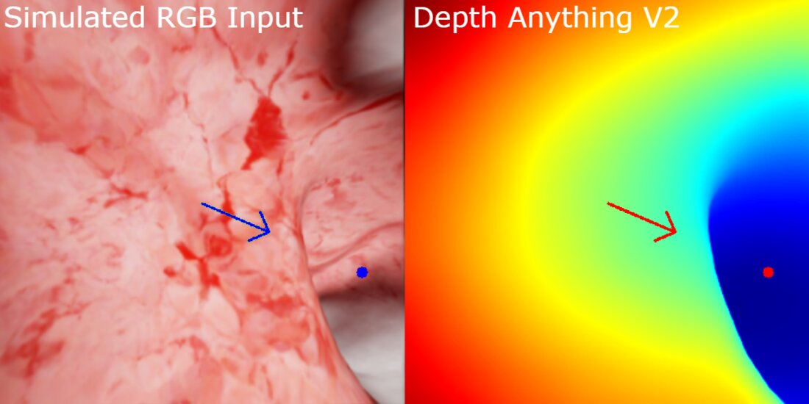
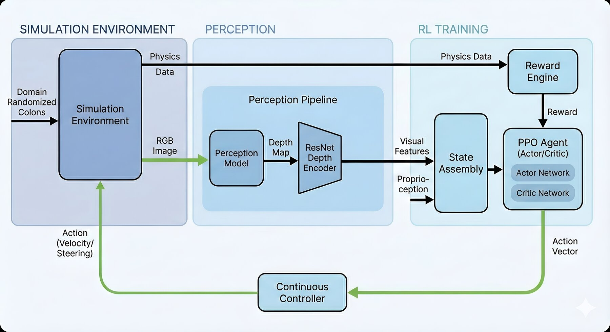
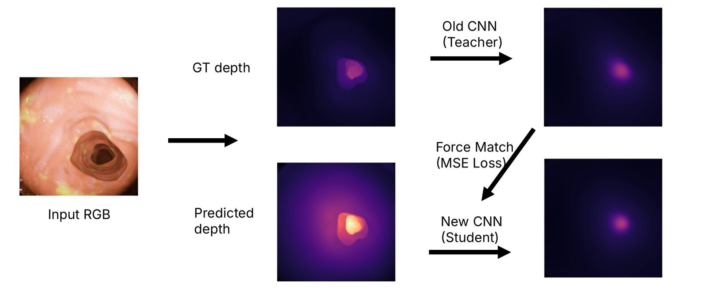

Reinforcement Learning for Autonomous Endoscope Navigation from Monocular Depth
December 2025 · Isaac Lab, Depth Anything V2, PPO
Motivation
Colorectal cancer is the second leading cause of cancer death in the UK and worldwide, and colonoscopy is how it is caught early. The procedure depends on the operator steering a long, flexible scope through a soft and folded colon while watching a single camera. It takes many procedures to learn, it is uncomfortable for the patient when it goes badly, and the quality of the examination varies with experience.
Soft robotic endoscopes could take some of that burden away, but they need to know where to go. That is hard to learn from real data. Recorded colonoscopies are few, they come without ground-truth depth, and the methods that work well in rigid scenes, such as SLAM, assume a world that does not deform. A policy trained directly on real video would have very little to learn from and no reliable way to be scored.
This project took the opposite route and trained everything in simulation. Synthetic colons give unlimited data with exact depth and centrelines, and reinforcement learning can practise thousands of runs without a patient. The aim was to turn monocular video into depth-aware steering commands, and to see how far a policy trained only on synthetic anatomy could go on anatomy it had never seen.
Synthetic colon generation
Ground-truth colon meshes from C3VD were cleaned and reconstructed in Blender and MeshLab, and their centrelines were extracted in 3D Slicer. Noise applied to the geometry produces new lumen shapes without limit, and procedural texture, roughness and normal maps vary the appearance. Rendering these with varied camera intrinsics, including fisheye, gives paired RGB and depth datasets of more than 20,000 frames.




Monocular depth estimation
Depth Anything V2 was chosen as the base model because it held up better than alternatives such as Marigold on complex scenes. It was adapted to endoscopy with parameter-efficient fine-tuning rather than full fine-tuning, which avoids overfitting a small dataset. LoRA was compared with ConvPass, an adapter that restores the image grid before applying convolutions and so keeps the spatial structure that vision transformers otherwise discard.

Navigation policy
A PPO actor-critic in Isaac Lab receives visual features and proprioception and outputs velocity and steering commands to a continuous controller. The reward favours progress along the colon, staying near the centreline and smooth motion with low jerk. Training ran 32 environments in parallel across five colons, with random start positions and orientations.

Training straight from 392 × 392 depth maps (153,664 values each) was slow, so an autoencoder trained on ground-truth depth compresses each map to 256 features, a 99.8% reduction. That encoder did not transfer to predicted depth. Instead of retraining the policy, a new encoder was distilled to reproduce the original encoder's features from predicted depth, so the existing policy runs unchanged.

Results
On a held-out colon the policy reached the end in every run, with smoother motion than earlier work, and it kept that performance when the camera intrinsics changed.
| Method | Absolute trajectory error (mm) |
|---|---|
| Depth and RL (this work) | 2.88 |
| CudaSIFT-SLAM | 3.09 |
| HI-PPO (2024) | 8.02 |
| Expert human | 8.03 |
Discussion
Synthetic RGB does not capture real specular highlights and fluids, so a policy trained directly on RGB overfits to simulation artefacts. Driving the policy from depth makes it depend on geometry, which transfers better. The cost is that perception and navigation are separated, and some of the visual noise of real procedures never reaches the policy. The next steps are testing on deformable colons and on a standard benchmark.